| Symbol |
Description |
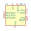
L80-R | Description: Quectel GPS Module
Keys: quectel GPS GNSS module
Datasheet: https://www.quectel.com/UploadImage/Downlad/Quectel_L80-R_Hardware_Design_V1.2.pdf |
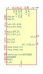
LEA-M8F | Description: GNSS Module LEA M8, VCC 3V to 3.6V
Keys: ublox GPS GNSS module
Datasheet: https://www.u-blox.com/sites/default/files/products/documents/LEA-M8F_DataSheet_%28UBX-14001772%29.pdf |
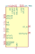
LEA-M8S | Description: GNSS Module LEA M8, VCC 2.7V to 3.6V
Keys: ublox GPS GNSS module
Datasheet: https://www.u-blox.com/sites/default/files/LEA-M8S-FW3_DataSheet_%28UBX-16010205%29.pdf |
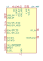
LEA-M8T | Description: GNSS Module LEA M8, VCC 2.7V to 3.6V
Keys: ublox GPS GNSS module
Datasheet: https://www.u-blox.com/sites/default/files/NEO-LEA-M8T-FW3_DataSheet_%28UBX-15025193%29.pdf |
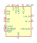
MAX-8C | Description: GNSS Module MAX M8, VCC 1.65V to 3.6V
Keys: ublox GPS GNSS module
Datasheet: https://www.u-blox.com/sites/default/files/MAX-8_DataSheet_%28UBX-16000093%29.pdf |
MAX-8Q | Description: GNSS Module M8, VCC 2.7V to 3.6V
Keys: ublox GPS GNSS module
Datasheet: https://www.u-blox.com/sites/default/files/MAX-8_DataSheet_%28UBX-16000093%29.pdf |
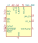
MAX-M8C | Description: GNSS Module MAX M8, VCC 1.65V to 3.6V
Keys: ublox GPS GNSS module
Datasheet: https://www.u-blox.com/sites/default/files/MAX-M8-FW3_DataSheet_%28UBX-15031506%29.pdf |
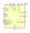
MAX-M8Q | Description: GNSS Module MAX M8, VCC 2.7V to 3.6V
Keys: ublox GPS GNSS module
Datasheet: https://www.u-blox.com/sites/default/files/MAX-M8-FW3_DataSheet_%28UBX-15031506%29.pdf |
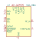
MAX-M8W | Description: GNSS Module MAX M8, VCC 2.7V to 3.6V
Keys: ublox GPS GNSS module
Datasheet: https://www.u-blox.com/sites/default/files/MAX-M8-FW3_DataSheet_%28UBX-15031506%29.pdf |
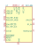
NEO-8Q | Description: GNSS Module NEO 8, VCC 1.65V to 3.6V
Keys: ublox GPS GNSS module
Datasheet: https://www.u-blox.com/sites/default/files/NEO-8Q_DataSheet_%28UBX-15031913%29.pdf |
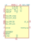
NEO-M8M | Description: GNSS Module NEO M8, VCC 2.7V to 3.6V
Keys: ublox GPS GNSS module
Datasheet: https://www.u-blox.com/sites/default/files/NEO-M8-FW3_DataSheet_%28UBX-15031086%29.pdf |
NEO-M8N | Description: GNSS Module NEO M8, VCC 2.7V to 3.6V
Keys: ublox GPS GNSS module
Datasheet: https://www.u-blox.com/sites/default/files/NEO-M8-FW3_DataSheet_%28UBX-15031086%29.pdf |
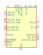
NEO-M8P | Description: GNSS RTK Module NEO M8, VCC 2.7V to 3.6V
Keys: ublox GPS GNSS RTK module
Datasheet: https://www.u-blox.com/sites/default/files/NEO-M8P_DataSheet_%28UBX-15016656%29.pdf |
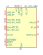
NEO-M8Q | Description: GNSS Module NEO M8, VCC 2.7V to 3.6V
Keys: ublox GPS GNSS module
Datasheet: https://www.u-blox.com/sites/default/files/NEO-M8-FW3_DataSheet_%28UBX-15031086%29.pdf |
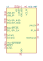
NEO-M8T | Description: GNSS Module NEO M8, VCC 2.7V to 3.6V
Keys: ublox GPS GNSS module
Datasheet: https://www.u-blox.com/sites/default/files/NEO-LEA-M8T-FW3_DataSheet_%28UBX-15025193%29.pdf |
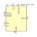
RXM-GPS-FM | Description: Module GPS Low Power, 14mA tracking, 22 channels
Keys: gps low-power
Datasheet: https://linxtechnologies.com/wp/wp-content/uploads/rxm-gps-fm.pdf |
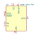
RXM-GPS-RM | Description: Module GPS Low Power, 14mA tracking, 22 channels
Keys: gps low-power
Datasheet: https://linxtechnologies.com/wp/wp-content/uploads/rxm-gps-rm.pdf |
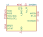
SIM28ML | Description: Standalone GPS/A-GPS receiver module, built-in LNA, -165dBm sensitivity, 2.8-4.3V, SMD
Keys: GPS A-GPS receiver
Datasheet: https://simcom.ee/documents/SIM28ML/SIM28ML_Hardware%20Design_V1.01.pdf |
| ublox_SAM-M8Q | Description: GPS ublox M8 variant
Keys: gps module with antenna
Datasheet: https://www.u-blox.com/sites/default/files/SAM-M8Q_DataSheet_%28UBX-16012619%29.pdf |
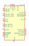
ZED-F9P | Description: GNSS Module ZED F9, VCC 2.7V to 3.6V, LGA-54
Keys: u-blox GNSS multi-band RTK
Datasheet: https://www.u-blox.com/sites/default/files/ZED-F9P_DataSheet_%28UBX-17051259%29.pdf |